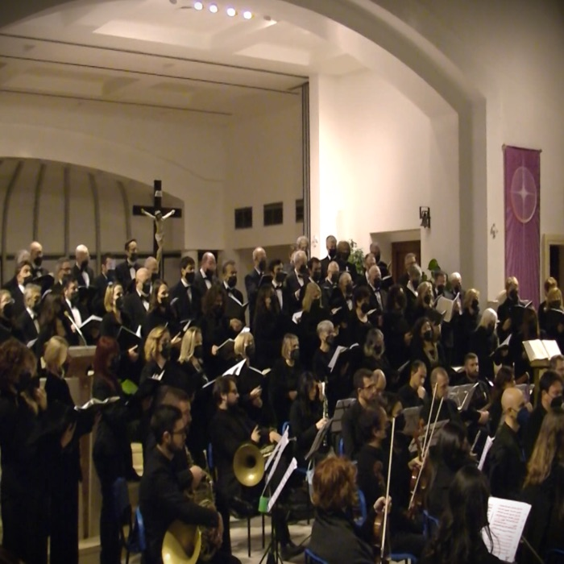

Una voce per la musica colta.
Il Coro Harmonia Vocalis nasce alla fine del 2019 come espressione artistica dell'Associazione Culturale Musicale Roma Musicanta, fondata nel 2018 per diffondere la musica d'arte sul territorio di Roma.

L'idea è nata da alcuni coristi: rendere la cultura musicale accessibile a un pubblico più vasto di quello che frequenta teatri e auditorium.
L'ascolto della musica colta non è prerogativa di contesti privilegiati, e offrirla in contesti sociali diversi è la missione che il nostro Direttore ci ricorda di non tradire. Quei coristi cercarono, e trovarono, un Direttore capace di farsi interprete di questo pensiero: il M° Claudio Maria Micheli, alla guida del coro fin dalla nascita e artefice della sua crescita.
Il primo concerto, alla fine del 2019, fu la Missa in Angustiis di Haydn, eseguita a Roma e a Segni. Da allora abbiamo affrontato il Requiem di Mozart, lo Stabat Mater e la Petite Messe Solennelle di Rossini, la Messa di Gloria di Puccini, i Carmina Burana di Orff, il Messiah di Händel.
Il coro è giovane, ma non altrettanto le voci che lo animano: buona parte dei coristi vanta un'esperienza pluriennale in altre formazioni corali del territorio romano.
Cosa ci muove
Cantiamo per far crescere in chi ascolta la consapevolezza del valore del messaggio musicale, sacro o profano che sia: un linguaggio universale che travalica le barriere e favorisce le relazioni umane. Per questo sosteniamo con la musica anche le iniziative di solidarietà.
Il Maestro ci ricorda che siamo cantori amatoriali, ma dobbiamo aspirare a cantare come professionisti. Quando al termine di un concerto il pubblico applaude siamo felici; ancora di più quando è l'orchestra a dimostrarci il suo apprezzamento.
Il direttivo
L'associazione è guidata da un direttivo eletto dai soci.
Associati a
ARCL Lazio
Associazione Regionale Cori del Lazio APS: la rete dei cori della regione.
Feniarco
Federazione Nazionale Italiana delle Associazioni Regionali Corali.